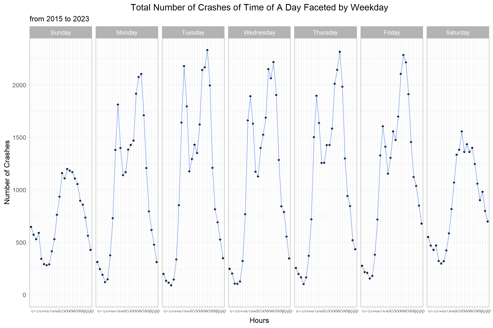
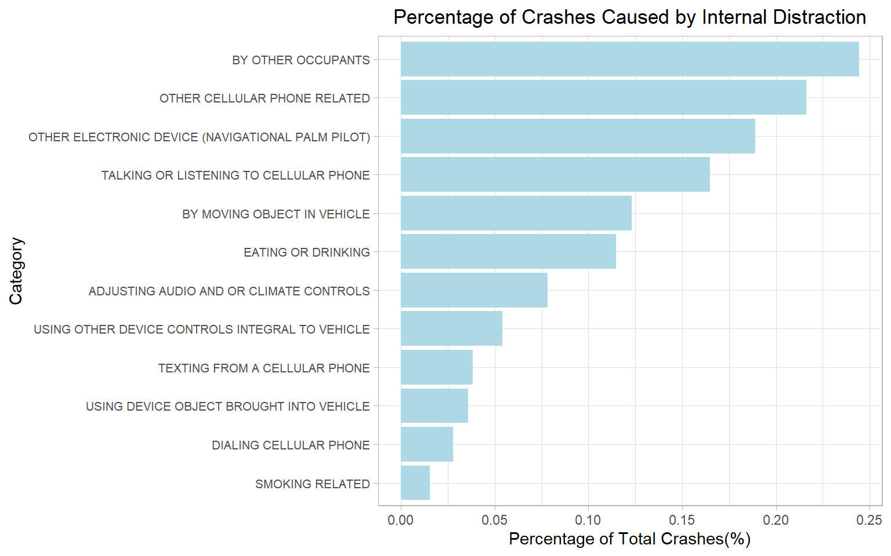

library(dplyr)library(ggplot2)library(forcats)library(tidyr)library(lubridate)library(stringr)library(RColorBrewer)data <-read.csv("data/Crash_Reporting_-_Drivers_Data.csv", header =TRUE, sep=",",na.strings=c("","N/A"))data_q1 = data |>select(Route.Type,Cross.Street.Type)data_q2 = data |>select(Crash.Date.Time)data_q3 = data |>select(Driver.Substance.Abuse,Driver.Distracted.By, Vehicle.Movement,Equipment.Problems, Injury.Severity,Vehicle.Damage.Extent)data_q4 = data |>select(Weather,Surface.Condition,Light, Traffic.Control,Speed.Limit, Injury.Severity,Vehicle.Damage.Extent)data_q5 = data |>select(Vehicle.Body.Type,Vehicle.Year, Vehicle.Make,Vehicle.Damage.Extent)
3.1 Accident Hotspots
The bar graph presents data on the number of traffic collision categorized by route and cross street types from 2015 to 2023 in Montgomery County.
Code
# Change Variables as factorsdata_q1$Route.Type =as.factor(data_q1$Route.Type) |>fct_explicit_na("NA")data_q1$Cross.Street.Type =as.factor(data_q1$Cross.Street.Type) |>fct_explicit_na("NA")# ggplot(data_q1, aes(y = fct_relevel(fct_rev(fct_infreq(Route.Type)), # "NA"))) +# geom_bar(fill = "cornflowerblue") +# labs(x = "Number of Crashes", # y = "Route Type", # title = "Number of Crashes by Route Types") +# theme_light()# # ggplot(data_q1, aes(y = fct_relevel(fct_rev(fct_infreq(Cross.Street.Type)), # "NA"))) +# geom_bar(fill = "cornflowerblue") +# labs(x = "Number of Crashes",# y = "Cross Street Type",# title = "Number of Crashes by Cross Street Types") +# theme_light()data_q1$id =rownames(data_q1)data_q1 =pivot_longer(data_q1,cols=Route.Type:Cross.Street.Type, names_to ="location")ggplot(data_q1,aes(y =fct_relevel(fct_rev(fct_infreq(value)), "NA"), fill = location)) +geom_bar(position ="dodge") +labs(x ="Number of Crashes",y ="Types",title ="Number of Crashes by Route Types and Cross Street Types",subtitle ="from 2015 to 2023") +theme_light(13) +theme(plot.title =element_text(hjust =0.5))
The most notable finding is that County roads and Maryland State roads are the top two highest number of crashes for both route types and cross street types. For other categories such as Municipality, US (State), and Interstate (State), the number of crashes is relatively lower, with cross street types consistently recording fewer incidents than route types. Ramp, Other Public Roadway, Government, Service Road, and NA categories have the fewest crashes.
However, the graph doesn’t provide the information that County roads and Maryland State roads are the most dangerous among all types. Since we collect the data in a county in Maryland state, the percentage of County and Maryland State roads are higher. More information is needed to determine the accident hotspot.
3.2 Time Patterns
Understanding the temporal patterns of road traffic accidents is crucial for developing effective safety measures and policies. By analyzing the frequency of crashes across different times of the day and week, researchers and policymakers can identify high-risk periods and underlying factors that contribute to these patterns.
We will analysis the yearly, monthly, weekly and hourly traffic collision pattern in Montgomery County, Maryland.
3.2.1 Yearly & Seasonal Patterns
The line graph below presents a detailed temporal analysis of traffic collision from 2015 to 2023, revealing several critical patterns within the data.
Code
data_q2$Crash.Date.Time =mdy_hms(data_q2$Crash.Date.Time)data_q2$Year =as.factor(year(data_q2$Crash.Date.Time))data_q2$Month =as.factor(months(data_q2$Crash.Date.Time)) |>fct_relevel("January","February","March","April","May","June","July","August","September","October","November","December")data_q2$Day =as.factor(day(data_q2$Crash.Date.Time))data_q2$Weekday =as.factor(weekdays(data_q2$Crash.Date.Time)) |>fct_relevel("Sunday","Monday","Tuesday","Wednesday","Thursday","Friday","Saturday")data_q2$Hours =as.factor(hour(data_q2$Crash.Date.Time))# ggplot(data_q2,aes(x = Year)) +# geom_point(stat = "count") +# geom_line(aes(group = 1), stat = "count", color = "cornflowerblue") +# ggtitle("Number of Crashes by Year") +# theme_light()# # ggplot(data_q2,aes(x = Month)) +# geom_point(stat = "count") +# geom_line(aes(group = 1), stat = "count", color = "cornflowerblue") +# ggtitle("Number of Crashes by Month") +# theme_light()# ggplot(data_q2,aes(x = Day)) +# geom_point(stat = "count") +# geom_line(aes(group = 1), stat = "count", color = "cornflowerblue") +# ggtitle("Number of Crashes by Day") +# theme_light()# ggplot(data_q2,aes(x = Weekday)) +# geom_point(stat = "count") +# geom_line(aes(group = 1), stat = "count", color = "cornflowerblue") +# ggtitle("Number of Crashes by Weekday") +# theme_light()# # ggplot(data_q2,aes(x = Hours)) +# geom_point(stat = "count") +# geom_line(aes(group = 1), stat = "count", color = "cornflowerblue") +# ggtitle("Number of Crashes by Hours") +# theme_light()ggplot(data_q2,aes(Month)) +geom_point(stat ="count") +geom_density(aes(group =1), stat ="count", color ="cornflowerblue") +facet_wrap(~Year,ncol =9) +labs(y ="Number of Crashes", title ="Number of Crashes Per Month Faceted by Year",subtitle ="from 2015 to 2023") +theme_light(13) +theme(axis.text.x =element_text(size =6, angle =45),plot.title =element_text(hjust =0.5)) +scale_x_discrete(labels =function(x) str_sub(x, 1, 3))
Significantly, there is a conspicuous decline in the number of crashes during the year 2020. This aberration corresponds with the global onset of the COVID-19 pandemic, a period characterized by lockdowns and widespread restrictions on movement. The resulting reduction in road traffic during this time is likely the primary driver behind the observed decrease in crashes, as stay-at-home orders and the transition to remote work reduced the frequency of commuting and non-essential travel.
Moreover, the graph illustrates recurrent peaks in the number of crashes during the months of May and October across multiple years. The reasons behind these spikes may be multifaceted. In May, increased travel due to warmer weather and social events, such as Memorial Day weekend in the United States, could contribute to higher traffic volumes and consequently, a greater incidence of crashes. October’s peak might be influenced by a combination of factors, including the end of summer vacations, the resumption of the school year, and potentially more challenging driving conditions due to seasonal weather changes, such as reduced daylight and falling leaves, which can affect road visibility and traction. These observations suggest that there are underlying seasonal behaviors and external events that significantly influence the rate of traffic incidents.
3.2.2 Weekly & Time Patterns
Code
ggplot(data_q2, aes(Hours)) +geom_point(stat ="count") +geom_density(aes(group =1), stat ="count", color ="cornflowerblue") +facet_wrap(~Weekday, ncol =7) +labs(y ="Number of Crashes", title ="Total Number of Crashes of Time of A Day Faceted by Weekday",subtitle ="from 2015 to 2023") +theme_light(13) +theme(axis.text.x =element_text(size =6, angle =45),plot.title =element_text(hjust =0.5)) +scale_x_discrete(labels =function(x) str_sub(x, 1, 3))

The line graph delineates the total number of crashes per hour, segmented by weekday, from 2015 to 2023. A prominent observation is that weekdays experience a higher frequency of crashes compared to weekends. This pattern likely reflects the routine dynamics of workweek traffic with increased vehicle volume due to commuting.
Intriguingly, there are two distinct peaks that occur around 8 AM and 5 PM on weekdays, aligning with typical rush hour times when commuters are either heading to work or returning home. On weekends, the peaks is around 12 pm to 3 pm, which matches our routine. Since people tend to choose going out in the afternoon during the weekend, more traffic during that time. The data underscores the critical need for enhanced safety measures during peak commuting hours on weekdays to mitigate the risk of crashes.
3.3 Collision Causes
3.3.1 Driver Substance Abuse
Table 1: Percentage of Traffic Collision Involved Driver Substance Abuse
None Detected
Detected
Unknown
71.19%
3.64%
25.17%
Driver substance abuse stands as one potential causes of traffic collision. The table above indicates that in majority crash cases, no substances were detected in drivers involved in accidents. There is only a notable minority of cases that substance abuse was confirmed. We will analysis more on the detected substance abuse cases in following stacked bar graph:
The four main categories of substance that detected from driver in traffic collision but not allowed are alcohol, illegal drugs, medications that impair driving ability and a combination of these substances.
In each categories, “Contributed” refers to instances where the substance present was deemed to have actively contributed to the cause of the crash, suggesting a direct link between impairment and the accident; “Present”, on the other hand, indicates cases where the substance was detected, but without a definitive contribution to the crash established.
Upon examining the graph, it becomes evident that alcohol is the most commonly detected substance in traffic crashes, dominating the data in terms of both presence and contribution to accidents. Across all substance categories, including alcohol, drugs, medication, and combinations, the ‘Contributed’ figures—representing cases where the substance directly caused the crash—constitute roughly one-third of the instances where the substance was present. This ratio is consistent across all categories, indicating a significant direct impact of these substances on traffic safety. This underscores the critical need for robust preventive measures and strict enforcement of laws against driving under the influence of any impairing substances.
3.3.2 Driver Distraction
Driver distraction is recognized as another common cause of traffic collisions, often with dire consequences. Distraction comes in various forms and can be categorized as internal or external, based on the origin of the distraction. Internal distractions are those within the vehicle and include actions such as talking or listening to a cellular phone, texting, eating, or adjusting the vehicle’s controls. External distractions, by contrast, are outside the vehicle and can involve being distracted by external events, objects, or the actions of other people.
Table 2: Percentage of Traffic Collision Involved Driver Distraction
Not Distracted or Unknown
Inattention
Internal Distraction
External Distraction
Other
81.10%
15.00%
1.30%
0.55%
2.05%
According to the provided data in Table 2, 15% of traffic collision are involved in driver’s inattention, which include driver “looking but did not see” or “inattentive or lost in thought”. Internal distractions and external distraction only make up around 1.8% of collisions.
Code
data2 =group_by(data_q3,Driver.Distracted.By) |>summarise(count =sum(crashes)) |>mutate(Driver.Distracted.By =reorder(Driver.Distracted.By, count))data2$percentage = data2$count/sum(data2$count)*100# ggplot(data2, aes(percentage, Driver.Distracted.By)) +# geom_bar(stat = "identity", fill = "lightblue")data2 <- data2 %>%mutate(category =case_when( Driver.Distracted.By %in%c("NOT DISTRACTED", "UNKNOWN") ~"Not Distracted or Unknown", Driver.Distracted.By %in%c("LOOKED BUT DID NOT SEE", "INATTENTIVE OR LOST IN THOUGHT") ~"Inattention", Driver.Distracted.By %in%c("BY OTHER OCCUPANTS", "OTHER CELLULAR PHONE RELATED","TALKING OR LISTENING TO CELLULAR PHONE", "TEXTING FROM A CELLULAR PHONE","DIALING CELLULAR PHONE", "EATING OR DRINKING","ADJUSTING AUDIO AND OR CLIMATE CONTROLS", "USING OTHER DEVICE CONTROLS INTEGRAL TO VEHICLE","USING DEVICE OBJECT BROUGHT INTO VEHICLE", "BY MOVING OBJECT IN VEHICLE", "SMOKING RELATED","OTHER ELECTRONIC DEVICE (NAVIGATIONAL PALM PILOT)") ~"Internal Distraction", Driver.Distracted.By %in%c("DISTRACTED BY OUTSIDE PERSON OBJECT OR EVENT") ~"External Distraction",TRUE~"Other" ))# data3 = group_by(data2,category) |># summarise(count = sum(count))# data3$percentage = data3$count / sum(data3$count) * 100data2 |>filter(category =="Internal Distraction") |>ggplot(aes(percentage, Driver.Distracted.By)) +geom_bar(stat ="identity", fill ="lightblue") +theme_light() +theme(axis.text.y =element_text(size =8),plot.title =element_text(hjust =0.5)) +labs(x ="Percentage of Total Crashes(%)", y ="Category", title ="Percentage of Crashes Caused by Internal Distraction")

The accompanying graph further breaks down internal distractions, highlighting the most frequent activity that lead to crashes is other occupants in vehicle.
To mitigate the risks of internal distractions, drivers are advised to minimize activities with other occupants in vehicle and the use of mobile phones while driving. Hands-free and voice-operated technologies can be beneficial, but their use should not overly divert attention from the road. The data calls for increased awareness and stronger adherence to road safety regulations, emphasizing the need to stay focused and avoid multi-tasking while behind the wheel.